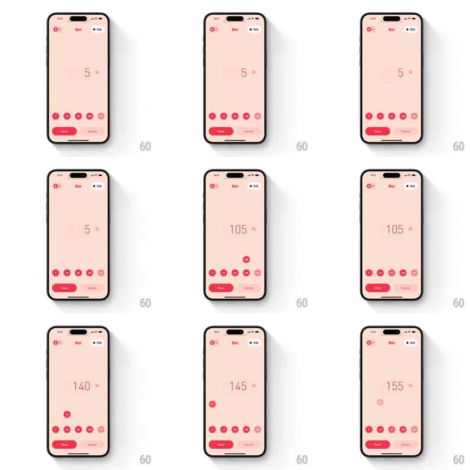

Media
Frame-by-frame

Rebuild this interaction 1:1: BLKJCK's betting - tapping a chip button launches a chip that arcs up into the bet readout, which rolls its digits odometer-style to the new total.

Rebuild this interaction 1:1: BLKJCK's betting - tapping a chip button launches a chip that arcs up into the bet readout, which rolls its digits odometer-style to the new total. ## Integration Integration: stack-agnostic spec - springs given as stiffness/damping, timed motions as duration + curve; map every value to your framework and animation library of choice. ## Scene Pink bet screen: a large bet readout with a clear affordance, a row of chip denomination buttons, Done and Cancel at the bottom, balance in the header. ## Motion spec Pattern: chip launch with rolling counter, ~700ms per tap. - On tap, a chip pops off its button (scale 1 to 1.15, 120ms) and launches in an arc toward the bet readout (spring stiffness 260 damping 18), spinning on its short axis in flight. - The chip shrinks and fades as it reaches the readout (last 150ms), absorbed into the number. - The readout's digits roll upward odometer-style to the new total (300ms, ease-out, cascading through carries) and the readout does a small scale pop (1 to 1.06 and back). - Rapid taps queue cleanly: multiple chips can be mid-flight, each landing rolls the counter again. ## Calibration - The chip's arc peaks midway between button and readout; a straight shot reads as a projectile, not a toss. - The roll starts as the chip lands - never before, or the number outruns the money. ## Reduced motion Chip fades out at the button; the total crossfades. ## Don't miss - The header balance stays put during betting - only the bet readout rolls. - Each denomination's chip carries its printed value through the whole flight.